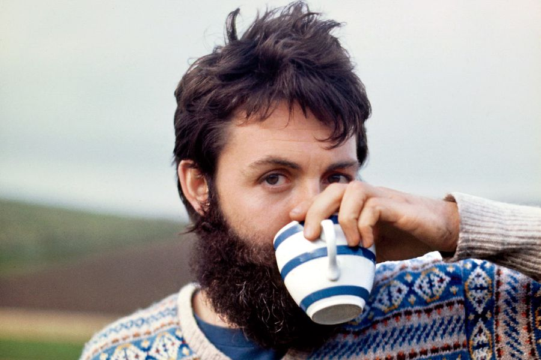

El tenso debut como solista de Paul Mc Cartney: El primer Disco indie de la historia
Soportando el quiebre de The Beatles, la animosidad contra su flamante esposa –ataque con helado en la cara incluido- y a la imposición de un manager que no aguantaba, Paul McCartney se refugió en Escocia, donde vivió oscuros momentos, pero que terminaron por volcarse en la creación de un álbum hecho completamente a pulso.Grabado en el living de su casa, y con todos los instrumentos tocados por él, traía joyas como “Maybe I’m amazed” donde exorcizó sus iras, y le dio el impulso para dejar atrás el fantasma de su banda madre.
Se puso furioso. Tras leer línea por línea la carta que Ringo Starr le había entregado personalmente, Paul McCartney dejó de lado su diplomática manera de ser, arrojó lejos la misiva y las emprendió contra el baterista, quien perplejo, recibió la furia del bajista.
Gritándole a quemarropa, “Macca” apuntaba con el dedo a Starr y le gritó: “¡ACABARÉ CON TODOS USTEDES!”, “¡PAGARÁN POR ESTO!”. Luego, lo echó de su casa de Cavendish, Londres, con viento fresco a la calle. El portazo se escuchó hasta en el canal de la Mancha. Paul había estallado.
Luego, McCartney llamó a George Harrison. El autor de “Here comes the sun” no alcanzó siquiera a decir algo cuando Paul lo tapó a gritos, también mandándolo a cierta parte. “Se comportaba como Atila el Huno. Gritaba tan fuerte que tuve que alejarme el auricular de la oreja”, contó el guitarrista en un testimonio que recoge Phillip Norman en Paul McCartney, la biografía (Malpaso, 2016).
El incidente, ocurrido a comienzos de 1970, fue parte del proceso que el compositor de “Hey Jude” pasó para componer y publicar su primer disco solista, llamado simplemente McCartney. De hecho, lo que causó la furia de Paul, aún bajo la etiqueta de Apple, fue una decisión tomada a sus espaldas, sin su aprobación.Pero no nos adelantemos. Los hechos comenzaron meses antes.
“Me marcho, quiero divorciarme”
20 de septiembre de 1969, una reunión de trabajo de The Beatles se transformó en algo tragicómico. Resulta que fueron citados por el representante Allen Klein para firmar un nuevo contrato con el sello discográfico que editaba los discos del cuarteto en Estados Unidos, Capitol Records.
Klein había conseguido que el porcentaje de regalías de los Beatles pasaría del 17,5% a un 25%. Algo increíble para la época. Sin embargo, los fab four debían entregar dos álbumes y tres sencillos por año durante las siguientes seis temporadas.
Pero Klein vio cómo su magnífico negocio se iba al tacho cuando John Lennon anunció algo que había decidido hace algunas semanas. “Me marcho, quiero divorciarme igual como lo hice con Cynthia (Powell, su primera esposa)”. Pese a que Paul intentó afanosamente convencer a su socio de echar pie atrás, Lennon estaba exultante. El 13 de septiembre se había presentado de manera sorpresiva en vivo en un festival en Canadá llamado “Live peace in Toronto” sin ninguno de sus compañeros, sino con una nueva banda, la Plastic Ono Band, junto a Eric Clapton, Klaus Voormann, Alan White y por supuesto, Yoko Ono. El show, pese a no haber sido ensayado, fue un éxito, y ahí el hombre de “Strawberry Fields Forever” terminó por convencerse de la idea de dejar la banda que él fundó.
“Yo formé el grupo y yo lo disolví. Así de sencillo". Mi vida con The Beatles se había convertido en una trampa. El bucle de una cinta”, señala al respecto Lennon en el libro The Beatles Anthology.
Lo máximo que lograron Allen Klein y Paul McCartney fue que John prometiera no hacer pública su salida por un tiempo, para no estropear el lanzamiento inminente del álbum Abbey Road, programado para seis días después. Pero lo de Lennon no era una novedad. Ringo Starr había dejado el grupo durante las tensas sesiones del White álbum (1968) y George Harrison hizo lo propio durante las grabaciones del álbum Get back, en el verano de ese 1969. Es decir, la idea de quebrar el cuarteto había pasado por la cabeza de todos los miembros… salvo por la de Paul.
La noticia lo dejó devastado y acabó con sus últimas fuerzas. Paul veía cómo la banda a la cual le había dedicado buena parte de su vida prácticamente se deshacía con la renuncia de John. Pero en rigor, Paul ya estaba bastante agotado. Llevaba meses de enfrentamiento con sus compañeros respecto a quién debía ser el manager del grupo y ponerse a cargo de Apple, la empresa que el cuarteto creó para automanejar su carrera tras la intempestiva muerte de su representante histórico, Brian Epstein, en 1967.
Lennon, Harrison y Ringo optaron por Allen Klein, un tipo de rudos modales y que había sido manager de los Rolling Stones. Por su lado, Paul prefería a Lee Eastman, un respetado abogado neoyorkino, quien parecía el candidato perfecto dado su impecable currículum, salvo por un detalle: era su suegro. Por eso, los demás, se negaban.
Sin embargo, una vez ungido Klein, Paul no firmó el contrato de representación y se vio en una situación incómoda. “Sus obligaciones contractuales con la sociedad de los Beatles y Apple implicaban que de pronto tuviera que trabajar con un mánager que jamás había aceptado y al que no soportaba”, señala en su libro Philip Norman. Por supuesto, comenzó a tomar distancia de Apple. No fue más a las oficinas y dejó de involucrarse en los asuntos de la compañía.
En sus memorias, El sonido de los Beatles (Indicios, 2011) el ingeniero de grabación de los fab four, Geoff Emerick, describe cómo era Klein: “El bajo y rechoncho gerente llegaba cada mañana en uno de los coches de Lennon, el Mercedes o el Rolls (de algún modo había convencido a John para que le dejara usarlos), vestido con un suéter de cuello de cisne que le quedaba pequeño y pantalones holgados. Pasaba la mayor parte del día en su despacho, gritando a la gente por teléfono”.
Klein comenzó a realizar masivos despidos en Apple, que incluyeron a viejos amigos del grupo, además de hacer prácticamente lo que quería en la empresa que Paul en un momento tuvo bajo sus riendas. “Lo que el manager había hecho y seguía haciendo con Apple solo aumentaba los sentimientos de traición, rechazo e impotencia que Paul albergaba”, indica Norman.Todo esto implicó un desgaste que comenzó a verse incluso en términos físicos y mentales, según Norman, un día mirándose frente al espejo, Paul comenzó a notar la aparición de sus primeras canas.
“¿Quién le arrojó el helado?”
Pero, tras las sesiones del álbum Abbey Road, no solo el hecho de tener que aguantar a Allen Klein estaba reventando a Paul. También el hecho de vivir en Londres, en el barrio de Cavendish, donde se agolpaban diariamente varias fans. Eso es algo a lo que el bajista se había acostumbrado desde el inicio de la beatlemanía. Pero lo que no pudo aguantar fue la hostilidad que las fanáticas mostraban hacia su esposa, la fotógrafa estadounidense Linda Eastman, con quien se había casado el 12 de marzo de 1969.
Las palabras le daban igual, lo que a Paul le irritaba eran las acciones. En el frontis de la casa habían comenzado a aparecer de manera constante graffittis con mensajes de odio hacia Linda, y peor aún, una tarde de verano, una de las fanáticas que formaba parte de uno de los habituales piquetes de chicas que aguardaban frente a la puerta de la casa de Cavendish vio que la flamante señora McCartney volvía sola a casa, y no encontró mejor forma de expresarle su odio que lanzarle lo primero que pilló a mano. Literalmente, en su propia mano. Así, un helado de chocolate estalló en la cara de una sorprendida Linda, quien solo atinó a entrar a casa.
Minutos más tarde, un furioso Paul salió a enfrentar a las calcetineras.
“¡¿Quién le ha tirado un helado de chocolate a Linda?!”, gritó. La atacante se identificó, y con pedantería señaló que no era un helado. “En realidad, era un mousse de chocolate”, dijo, sin ánimo alguno de disculparse.
Graffitis, helados en la cara de su mujer, un manager que no soportaba, el fin del grupo. Paul no aguantó más.Tras la reunión del 20 de septiembre, y el episodio del “mousse de chocolate”, cogió a Linda, sus perros, su hija Mary –quien había nacido meses antes-, a Heather, la vástago de Linda a quien había adoptado como propia, una guitarra, y arrancó con todos a Escocia, a su granja en High Park, ubicada en la península de Kintyre (y que años después inmortalizaría en su canción “Mull of Kintyre”).
Paul sabía que partía, pero no por cuánto tiempo permanecería ahí. Por eso, su salida la realizó en estricto secreto. “Nadie, salvo su familia y los miembros de Apple con los que tenía mayor intimidad, sabía lo de la península de Kintyre y la granja de High Park, e incluso los que estaban en el secreto recibieron escasas noticia de él o ninguna”, cuenta Norman. De repente, el hombre de “Penny Lane” era un fantasma.
Los oscuros días en Escocia
La calma en el campo de Kyntre parecía el escenario ideal para que Paul recuperara energías y encontrara la paz. Pero el proceso no fue inmediato.“Pasé mucho tiempo en Escocia, donde tengo una granja. Normalmente voy allí de vacaciones, pero en esta ocasión, me pasé todo un tiempo allí intentado imaginar qué haría y probablemente fue entonces cuando resultó más terrible. Tenía la sensación de que me habían despedido por reducción de plantilla. La gente decía ‘pero tienes dinero, no es como a un minero que lo despiden por reducción de plantilla’. Pero para mí lo eran porque no se trataba de una cuestión monetaria sino de autoestima. De repente me sentí como si no valiera nada si no estaba en The Beatles”, cuenta Paul en The Beatles Anthology.
Paul pasaba sus días en cama, sin levantarse, sin afeitarse, bebiendo abundante whisky, fumando tabaco y marihuana. Sin ganas de hacer nada. Sin un rumbo fijo. Sin horizontes.
“Yo pensaba: ‘¿Podré volver a cantar y componer?, ¿quién querrá relacionarse con un bajista en paro?’. Aquello me afectó muchísimo” añade el hombre de “Eleanor Rigby” en el Anthology.
Y por si fuera poco, Paul comenzó a tener pesadillas con quien menos tenía ganas de ver. “En los sueños que una vez le habían inspirado ‘Yesterday’ y ‘Let It Be’ empezó a aparecer Allen Klein disfrazado de un dentista demoníaco que intentaba inyectarle una aguja hipodérmica; como había revelado en la canción ‘Every Night’, Paul se quedaba acostado, mientras se sacudía de manera incontrolable y sentía la cabeza demasiado pesada para levantarla de la almohada”, relata en la citada biografía Phillip Norman.
Pero ahí apareció Linda. La eterna Linda. Comprensiva, miró a los ojos a su marido y le dijo: “Mira, estás bien. No es más que el shock por lo de The Beatles y todo eso”. Ahí Paul, comenzó a aterrizar, a darse cuenta que la vida tenía un sentido, y que su crisis personal, tenía una salida.Así, en diciembre de 1969 la familia McCartney ya estaba de vuelta en Cavendish, y Paul ya tenía una idea, y sobre todo canciones para llevarla a cabo.